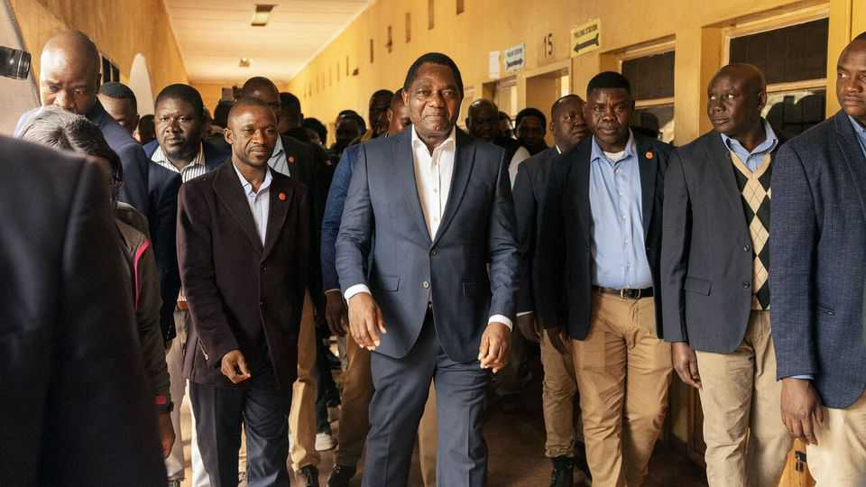

Zambia’s tainted election threatens its reputation
President Hakainde Hichilema’s image as a liberal reformer is tarnished, too

Aug 20th 2026
WHEN HAKAINDE HICHILEMA was elected as Zambia’s president in 2021, he promised to reverse the democratic slide in the southern African country of 23m. During his long years in opposition, including a spell behind bars, he had preached liberal principles. In office, he initially cracked down on bullying party cadres. In a survey last year, more than three-quarters of Zambians thought he had done a good job of strengthening democracy.
But that reputation may not survive the events of Zambia’s recent election, which was held on August 13th. Mr Hichilema, who was declared the winner on August 18th, almost certainly received the most votes. But evidence of inflated vote tallies presented by independent observers suggests he did not win 60%, as the electoral commission claims. The killing of a former cabinet minister by state security forces during a raid on the house of Brian Mundubile, the main opposition candidate, further tarnished the process. So did Mr Mundubile, who claimed victory without showing evidence.
Voting itself went relatively smoothly. The crucial moment came the day after polling, when the electoral commission suspended the vote count, citing unspecified attacks on its staff. When tallying resumed, several hours later, the situation had “deteriorated significantly”, according to observers dispatched by the European Union. Instead of recording results as soon as they were announced, the returning officers seemed to wait for instructions from the commission’s headquarters. The armed forces maintained a heavy presence at the centres where votes were added up.
In some places, oddly, many more votes were apparently cast in the presidential race when compared with the number of votes cast for parliamentary candidates—even though the two ballots were held at the same time. Early analysis by Nicole Beardsworth, of the University of Witwatersrand, and Nic Cheeseman, of the University of Birmingham, suggests that the discrepancy may amount to 350,000 to 550,000 votes. The Christian Churches Monitoring Group (CCMG), an independent local election observatory that was conducting its own parallel count, thinks that votes were added to Mr Hichilema’s tally in 30 of the 226 constituencies, boosting his overall score by four percentage points, something which has not been observed in any previous Zambian election since verification began in 2001.
None of this supports Mr Mundubile’s claim to be the real winner. Even without the inflated tallies, the CCMG still thinks Mr Hichilema got 56% of the vote. Mr Hichilema’s team says that turnout was higher in the presidential race because more voters cared about it. “The choice facing the country was national, and turnout followed it,” says a spokesperson.
Yet the vote is not the only concern. On August 14th the police and armed forces raided Mr Mundubile’s home. Afterwards he said they had shot Mutotwe Kafwaya, an opposition politician and former cabinet minister. Senior civil servants said the raid targeted a militia that was planning an armed insurrection and initially denied Mr Kafwaya had been shot. But on August 19th the police admitted that Mr Kafwaya was dead. The police chief also said that they had arrested 11 people. He reported that guns and other equipment were found at the scene, and claimed that his men were fired at first. Mr Mundubile called the claims “total fabrications”. The truth will take time to emerge.
Before the election, many Zambian civil society groups had warned that Mr Hichilema had tilted the playing field in his favour. Still, the events of the past week have taken many observers by surprise. Zambian democracy might not be perfect, but it has generally been more robust than in most countries on the continent, with three peaceful transfers of power since multiparty democracy was restored in 1991. The country’s messy election is another sign that democratic norms are eroding, in Africa as in other parts of the world. ■
Sign up to the Analysing Africa, a weekly newsletter that keeps you in the loop about the world’s youngest—and least understood—continent.